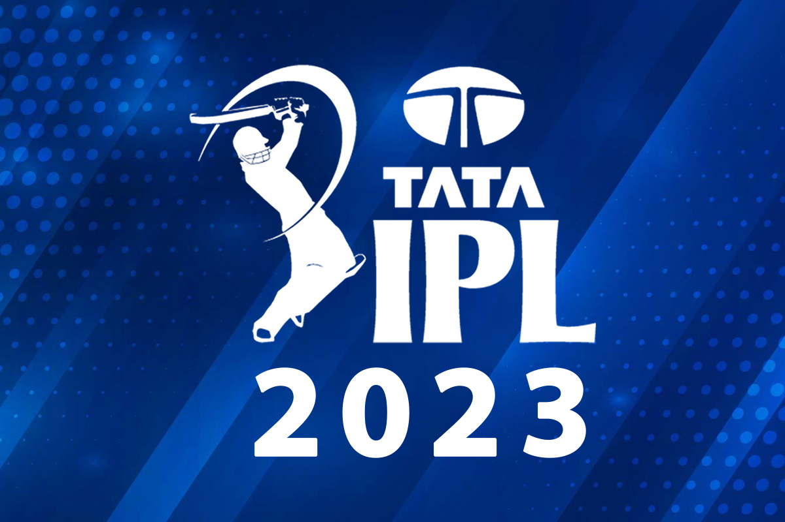

Analyzing Player Performance and Match Insights in IPL 2023: A SQL Data Analyst Project
In this SQL data analyst project, we delve into the exciting
world of Indian Premier League (IPL) 2023, focusing on all matches played before
the playoffs. The dataset provides a comprehensive view of each match, including match details,
bowling and batting performances, and team statistics. By querying the data using SQL from the
database, we aim to uncover valuable insights into player performance, team dynamics, and key
factors that influence match outcomes. Through meticulous analysis and visualization, we
endeavor to gain a deeper understanding of IPL 2023 and its thrilling cricketing encounters.
Collected dataset from kaggel-
Link - https://www.kaggle.com/datasets/purnend26/ipl-2023-dataset
➢ We explore IPL 2023 matches before playoffs, leveraging a comprehensive dataset encompassing match details, player performances, and team statistics.
➢ Utilizing SQL queries, our objective is to unearth insightful patterns in player contributions, team dynamics, and crucial determinants of match results.
➢ The meticulous analysis undertaken in this study offer a deeper comprehension of IPL 2023's enthralling cricketing encounters, providing valuable strategic insights for teams and enthusiasts alike.
Perform an in-depth analysis of IPL 2023 matches (up to playoffs) using SQL queries on the provided database. Extract insights such as top-performing bowlers and batsmen, team performance based on runs and wickets,
the impact of toss decisions, and identify any patterns or trends that influence match outcomes.
SQL Queries and Data Analysis
➢
We utilized Jupyter Notebook and the Python language, leveraging SQLAlchemy to connect with a MySQL database and execute SQL queries.
➢ Through a series of carefully crafted SQL queries, we extracted valuable insights into player performances, team dynamics, and factors influencing match outcomes.
➢ The presented outputs showcase key statistics, top-performing players, and interesting trends emerging from our analysis, offering a comprehensive understanding of IPL 2023's enthralling cricketing encounters.
After analyzing the IPL 2023 match data before playoffs, we found valuable insights. The top-performing bowlers in terms of wickets and economy rate were identified.
The batting performances of key players were analyzed, focusing on runs, boundaries and dismissals. We observed trends in team performances, such as total runs, wickets, and overs played. Additionally, we discovered the cities and venues with the most matches, along with the impact of toss-winning teams and match results. These
insights can provide crucial strategic input for teams and fans alike in understanding the dynamics of IPL 2023.